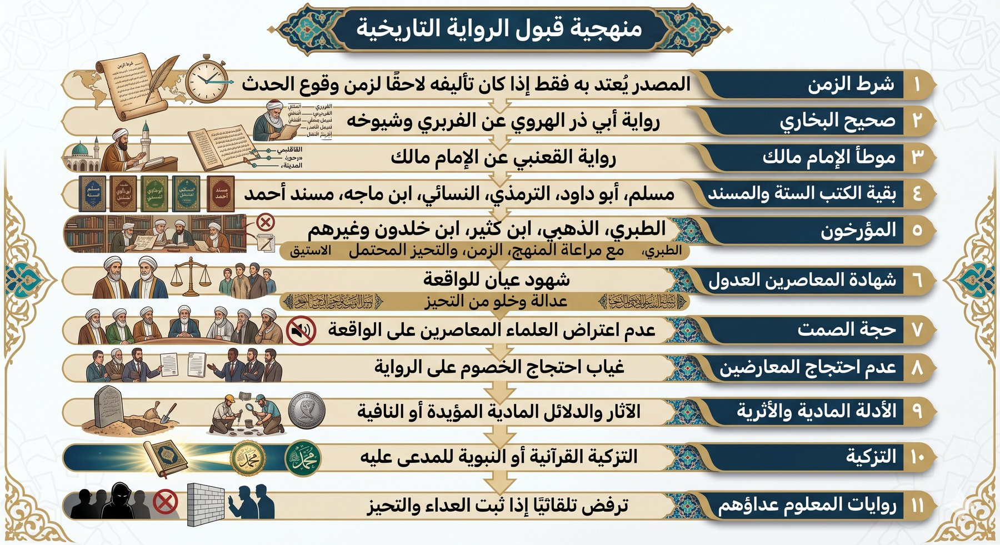

التعامل مع الروايات التاريخية يقوم على عدم قبول أي خبر أو رواية إلا بعد إخضاعها لمجموعة من المعايير المتدرجة، تعمل كمرشحات متتابعة تنقّي الرواية من الشوائب وتكشف مواضع الضعف والشك فيها. فما اجتاز هذه المعايير قُبل واعتُمد، وما سقط في واحدٍ منها أو أكثر رُدَّ ولم يُلتفت إليه.
نعلم جيدًا أن القارئ قد يتفاجأ بما يخالف معتقدًا تربّى عليه أو درسه، ونحن هنا لا نريد الدخول في جدال، وإنما نريد وضع آلية نتفق عليها في عرض الأخبار التي تصلنا — سواء قديمًا أو حديثًا — لتنقيتها من الشوائب واللا منطقية.
ولا بد من التنبّه منطقيًا إلى أن المصدر لا يُعتدّ به إلا إذا كان تأليفه لاحقًا لزمن وقوع الحدث؛ فإذا وقع الحدث بعد وفاة المصنّف أو المؤرخ مثلًا، فلا يُعمل به منطقيًا.
لماذا البخاري ومالك أولًا؟
نحن بعد القرآن نرجع إلى ما يتفق عليه عامة العلماء، وهو صحيح البخاري. ولكن قبل أن يقفز الذهن إلى ما فهمه الآن — فالبخاري مثله مثل أي كتاب من صنع البشر، عرضة للتحريف أو التصحيف. لذلك نرجع إلى أعلم المحققين بالمخطوطات وأدقّ النسخ وأثبتها للاعتماد عليها: أجمع علماء الحديث والمحققون أن أثبت وأضبط تلاميذ البخاري هو العلامة الفربري، وعن أضبط تلامذته — الكشميهني والمستملي والسرخسي — روى الإمام أبو ذر الهروي. لذلك نعتمد فقط على هذه الرواية في الموقع.
ثم بعد البخاري نعتمد على موطأ الإمام مالك لجلالته وتحرّيه في انتقاء الرواة، وحذره الشديد من روايات الكوفيين، فلم يكن يروي إلا عمّن يثق بدينه وضبطه — واعتمدنا على أضبط وأقوى تلاميذه وهو القعنبي.
إذن، نحن لا نأخذ بكتابٍ صنّفه بشر إلا بعد التحقق وتحرّي أي المرويات هي الأضبط والأدق، ولا نُسلّم بأي رواية دون الرجوع إلى كبار المحققين والعلماء.

المستويات العشرة بالتفصيل
الخبر يُعرض على هذه المستويات بالترتيب. النزول في الرتبة يعني حاجة أكبر للتحقق، حتى يصل إلى مستوى لا يُقبل فيه شيء إلا بشروط مشددة.
صحيح البخاري — رواية أبي ذر الهروي
كلُّ كتابٍ سوى كتاب الله عرضةٌ للتحريف والتصحيف. النسخة المعتمدة من صحيح البخاري هي رواية أبي ذر الهروي عن شيوخه الثلاثة — الكُشميهني، والسَرخسي، والمستملي — عن الفربري، وهو أثبت تلاميذ البخاري وأوثقهم.
الضابط: النسخة المشهورة حاليًا في المكتبات ليست تلك مع الأسف. يُعتدّ بها فقط إذا كان تأليفها لاحقًا لزمن وقوع الحدث.
موطأ الإمام مالك (رواية القعنبي) والتاريخ الكبير والصغير للبخاري
هو إمام أهل المدينة، وأعلى من صنّف الحديث وجمعه سندًا في أحاديث المدنيين من الصحابة، حتى سمّى البخاري سلسلةَ مالكٍ عن نافعٍ عن ابن عمر رضي الله عنهما أصحَّ الأسانيد. وكان مالك من أشد الأئمة انتقاءً لشيوخه وصرامةً في قبول الرواة، ولا سيما فيما يتعلق برواة الكوفة.
الضابط: المعتمد هو رواية القعنبي عن الإمام مالك؛ والنسخة المشهورة في المكتبات ليست تلك أيضًا. يُقبل بشرط تحليل السند كاملًا والتثبت من الرواية، وألا تتعارض مع رواية صريحة بصحيح البخاري.
بقية الكتب الستة والمسند
مسلم، أبو داود، الترمذي، النسائي، ابن ماجه، ومسند أحمد وغيرهم.
الضابط: ذكر السند كاملًا، والتحقق من كل راوٍ (تشيّع، كذب، ضعف، تدليس، ثبوت السماع وابتداع)، وألا تتعارض الرواية مع نصٍّ صريح بالبخاري أو مالك.
المؤرخون
إذا ذكر الواقعة مؤرخون كالطبري والذهبي وابن كثير وابن خلدون وأمثالهم، فلا بد من اعتبار منهج المؤرخ ومذهبه، والزمن الذي عاش فيه، وظلّ أي دولة ألّف مؤلفاته — لشبهة التحيز — وآراء المحققين المعتمدين أمثال الدكتور بشار عواد معروف فيه وفي رواياته.
الضابط: الروايات المرسلة أو بلا سند لا يُعتدّ بها البتة.
شهادة المعاصرين العدول غير المتّهمين بالتحيّز للواقعة
رواة عدول معاصرون للواقعة، خالون من التشيّع والبدعة — وبخاصة الروايات التي تدعم بدعتهم أو منهجهم، فتكون مجروحة للتحيز المفترض.
الضابط: يُشترط أن يكون الرواة قد شهدوا الواقعة رأي العين، وأن يخلوا من البدعة التي تدعمها الرواية ذاتها. شرط الإثبات هو نفس معيار المحاكم الشرعية لقبول الادعاء: شاهدان عدلان.
حجة الصمت العلمي
إذا لم يُنكر علماء المسلمين العدول المعاصرون للواقعة — وبخاصة أحدٌ من الصحابة المشهود لهم بالعلم والفقه أمثال ابن عمر وابن مسعود — ولم يتطرق إليها أحد منهم بإنكار أو إقرار، فهذا دليل سلبي قوي جدًا على عدم وقوعها بالصورة المزعومة.
سؤال منطقي: كيف يجوز عقلًا أن لا ينتفض أو يعترض عالم مسلم واحد على قتل الفاتح لأخيه أحمد، أو بيبرس لقطز، أو يزيد للحسين؟
عدم احتجاج المعارضين بالرواية
عدم استدلال المعارضين للمدعى عليه بذات القصة فيه دلالة قوية على عدم صحة الرواية، لأنها كانت ستخدم قضيتهم ومذهبهم لو صحّت.
مثاله: عدم احتجاج ابن الزبير برواية رجم الكعبة، وعدم احتجاج أنصار علي بمقولة «تقتله الفئة الباغية» يوم التحكيم.
الأدلة المادية والأثرية
الآثار المادية المؤيِّدة للوقوع أو النافية له.
مثاله: غياب أصل مخطوطة "قانون قتل الإخوة" المنسوب للفاتح دليلٌ على عدم ثبوته.
التزكية النبوية للمدّعى عليه
تزكية عامة في القرآن، أو تزكية خاصة من النبي ﷺ.
الضابط: الرواية المشبوهة المعارِضة للتزكية النبوية تزداد ضعفًا ويشتد ردّها. مثاله: حديث «نِعْمَ الأميرُ أميرُها» في شأن فاتح القسطنطينية، مقابل روايات واهية تتهمه بالقتل.
روايات المعلوم عداؤهم
رواية من ثبت عداؤه إذا لم تدعمها رواية صحيحة بحسب الشروط السابقة، لا تُقبل لطبيعة التحيز الذي سيصير في مثل هذه الحالة.
الضابط: أي رواية مصدرها أعداء أو مجاهيل تسقط تلقائيًا ولا تُقبل. مثاله: روايات المؤرخين البيزنطيين عن العثمانيين — معادية بطبيعتها، وبدون الشروط الشرعية المطلوبة لقبول الأخبار.
✓ إذا اجتازت جميع الاختبارات
يُقبل الخبر ويُعمل به، ويصبح جزءًا من الصورة التي يبنيها الموقع عن الواقعة.
✕ إذا سقطت في اختبار واحد
يُردّ الخبر أو يُتوقف فيه، بحسب نوع الخلل الذي ظهر في تلك المرحلة بالذات.
هذا الموقع مزيج بين المنطق وأصحّ الروايات — لا الفرضيات، ولا الافتراءات، ولا سلاسل الإسناد غير الثابتة بذاتها، ولا الموضوعات، ولا روايات الخصوم، ولا غياب الدليل المادي.